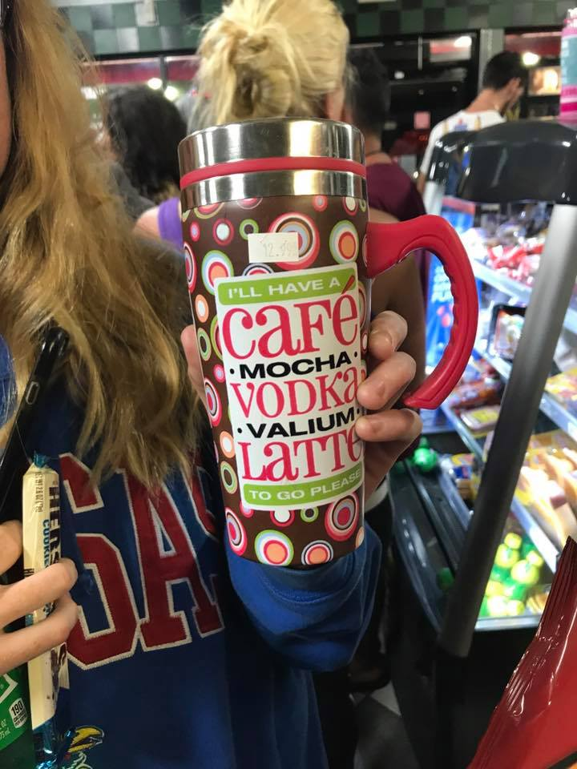

Check out Some of Our Beloved Fan Submitted Content!!
by our loved meme moms!!
😂😂😂😂😂😂
Steph B

saw this at a gas station tonight. thought of you! LOL. xo
Claire T
We are ALL Debby!!!1
Kelly Q
SHaron I saw this at the bookstore and could t resist 😂😂😂 sounds like somebodys been spying on the PTA MEetings right??? Lord knows I need my Pinot to get me through that hahaha show this to MArtha and BEverly